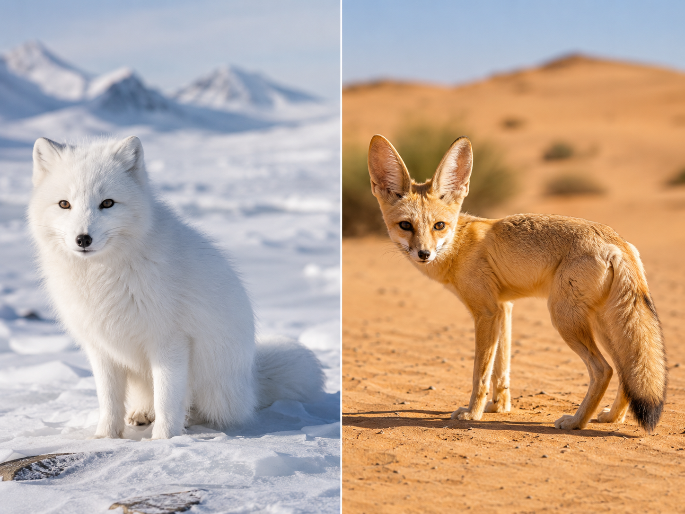
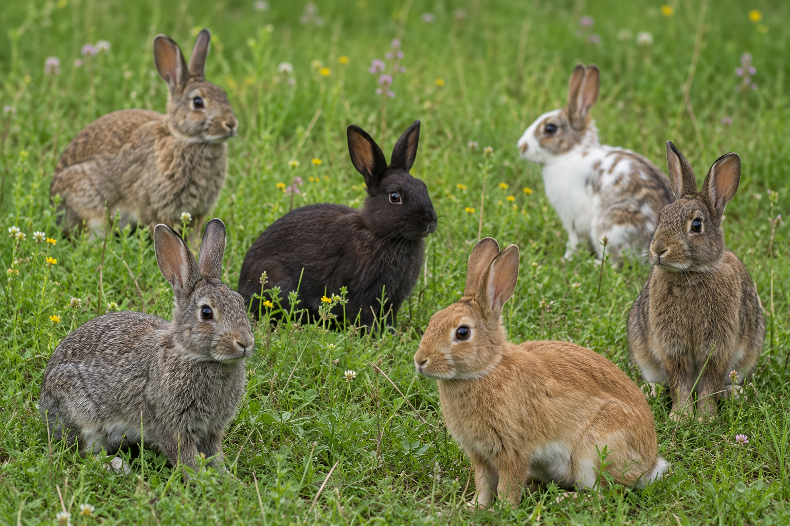
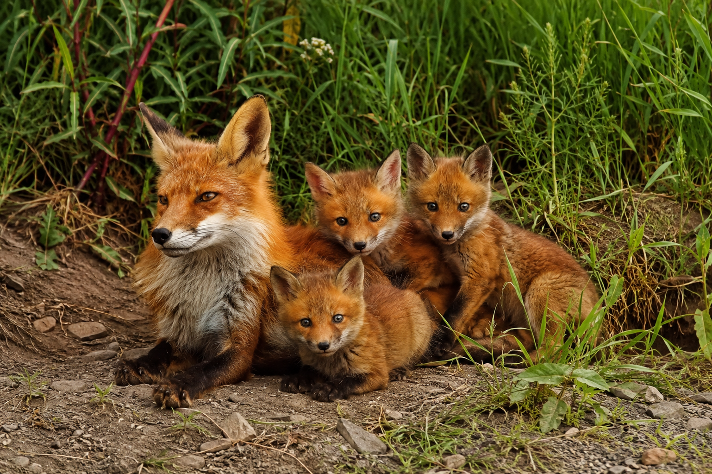

Hold this question as you work. By the end, you'll be able to answer it with evidence from your investigation!
Start here. Learn the words you will use today.

Be specific. Don't write "different colors." Write "the arctic fox has white fur; the fennec fox has sandy tan fur." Specifics matter in science.
Before we dive in, learn the words scientists use. Tap each card to flip it and read the definition out loud.
Copy this sentence carefully into your science notebook:
"Animals with traits that match their environment have a better chance of survival."
Now learn the main science idea.
Every living thing has traitstraitA feature of an organism — like fur color, ear size, or body shape. like color, size, and shape. But individuals of the same species are not all identical. A litter of puppies might have one with longer fur, one with bigger paws, one with a spotted coat.
That difference is a variationvariationA difference in a trait among individuals of the same species.. Variations happen naturally. Most of the time they do not matter much. But sometimes, a variation turns out to be exactly right for where an animal lives.

When a variation helps an animal survive, we call it an advantageadvantageSomething that helps an organism survive or reproduce better than others.. An animal with an advantage lives longer—and living longer means more chances to have offspring.
Those offspring can inherit the helpful trait too. Over time, the variation becomes more common. Not because animals decide to change—but because animals with that trait survive and reproduce more.

Arctic foxes and fennec foxes are both foxes—same family, similar body plan. But their traits fit very different places. The arctic fox has thick white fur and small rounded ears. The fennec fox has enormous ears and a sandy coat.
Here is the key: a trait helpful in one environment could be harmful in another. Big ears in the arctic would cause rapid heat loss. Thick white fur in the desert would cause overheating.
Real-World Connection: Researchers track which traits offspring inherit to understand how survival advantages spread through animal populations over generations.
When a trait matches the challenges of an environment, it gives a survival advantage.
Cause and effect: right trait → better chance of surviving → more offspring → trait gets passed on.
Curious? Go Deeper
Fennec ears as a cooling system: The huge ears are packed with blood vessels near the surface. When the fox gets hot, blood flows through those vessels and the heat escapes through the thin skin. It works like a built-in radiator.
The arctic fox changes its coat twice a year: white in winter for snow camouflage, brown in summer when the tundra thaws. Same genes—a seasonal signal triggers the color change.
Natural selection across generations: When a trait gives an advantage, individuals with that trait survive and reproduce more. Over many generations, the helpful trait becomes more common in the population. Scientists call this natural selection.
Now test the idea yourself.
You will need: Science notebook, pencil, colored pencils, and a blank chart page.
Follow each step. Record your observations as you go.
Observe the Foxes: Think back to the fox photo from Activity 1. List at least 4 specific differences you observed between the arctic fox and the fennec fox. Use your notebook notes—be as specific as you can.
Choose an Environment: Pick one: arctic tundra, desert, forest, or wetland. Write its name and describe it—temperature, wet or dry, food available.
Design an Organism: Invent an animal for your environment. Give it at least 4 specific traits. For each, think: how does it help the animal find food, stay safe, handle the weather, or find a mate?
Build a Chart: Draw a 4-column chart in your notebook: Environment · Survival Challenge · Helpful Trait · Why It Helps. Fill in one row for each of your 4+ traits.
Write a Conclusion: Using your chart as evidence, write one sentence that explains how a trait variation improves an organism's chances of survival.
Think about what you found. Being specific matters — a good scientist notices exactly what they saw, not just "it worked" or "it didn't work."
Tell the story of your investigation: what you chose, what you designed, and what the evidence shows about survival traits. Use your chart and notebook notes.
Think through each question on your own. Talk it through or think about it in your mind.
Check what you understand.
Show what you learned.
🔍 Part A — Identify the Traits
Use what you learned from the photo and diagram.
💬 Part B — Short Answer
Answer each question in complete sentences. Use your science vocabulary!
How do trait variations help animals survive in different environments? Use one fox example and your designed organism as evidence.
What do you think?
💡 Start with: "I think trait variations help animals survive because…"
What did you observe or learn that supports your thinking?
💡 Start with: "I know this because when I designed my organism, I observed…"
Why does that make sense?
💡 Start with: "This makes sense because…"
📚 Try to use at least two of these words in your answer: variation, advantage, camouflage
🎨 Part C — Draw & Label
Draw your designed organism in its environment. Label all 4 traits. Next to each label, write a short phrase explaining how that trait helps the organism survive.
Submit your work on Canvas using one of these options:
Make sure your submission includes all of these: